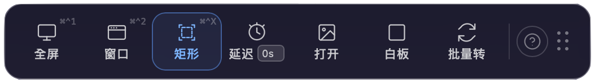
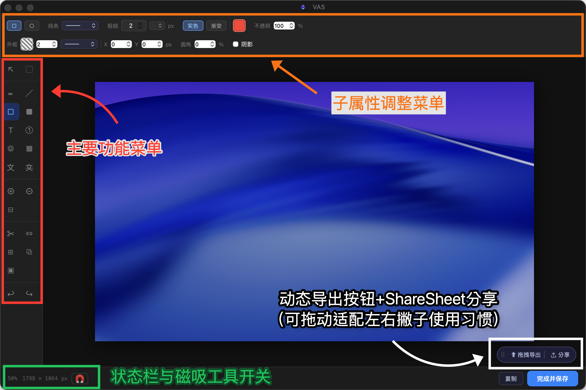

Welcome on Board
往下滚是「入门 → 核心 → 进阶」的顺序；
左侧目录永远陪着你，点一下就能跳到任何一节。
Ctrl＋F 搜索也可以。
往下滚是「入门 → 核心 → 进阶」的顺序；
想跳转段落，请点右上角的呼吸灯。
第一次打开 VAS
从 App Store 下载安装后打开 VAS，你会看到桌面上有一排崭新的浮动工具列。它可以停驻在你的桌面上，任你拖动。

如果你觉得它在桌面上有点占位想让它小一点——呼吸灯模式预设为关闭，请到工具列「快捷键说明」内手动开启。

VAS 同时进驻 macOS 菜单列上，以一个瓶子的形状出现在你屏幕右上角。
到右上菜单列点一下瓶子（左键），可以召唤或完全隐藏桌面上的工具列——如果你是桌面洁癖患者，我们都帮你想好了。
VAS 依然会在菜单列待命。
授权与隐私
VAS 第一次截图时会请求 macOS 的屏幕录制权限——这是 macOS 对所有截图类工具的规定，不可省略。如果当时没授权，到「系统设置 → 隐私权与安全性 → 屏幕录制」勾选 VAS，重新开启即可。
所有截到的图片、OCR 辨识出的文字、QR Code 的内容，完全在你的电脑本机处理——不上传、不分析、不训练。VAS 没有服务器来接收你的数据。
第一次截图
按 Dock 上的 VAS 图标，或点菜单列的瓶子——不管 VAS 原本在哪，它会被「召唤」到你眼前，展开成完整的工具列。
选一个截图模式（全屏幕 ⌘^1、窗口 ⌘^2、矩形 ⌘^X），框出你要的画面——VAS 会立刻把画面带进编辑器，让你继续编织你无法单用文字描述的意念。
编辑完，用「拖曳汇出」拖出去给任何窗口或文件。
三秒内结束。
一盏呼吸灯 x 一键召唤
当你不用 VAS 又希望它能小一点在桌面上待机时，请开启呼吸灯模式。
工具列会缩成一条 120×6px 的光。低调、不碍事，静静地等你。
而当你有事要找它时：
- 全版本拖曳图片靠近——工具列像捕蝇草一样张开，接住你拖过来的图。放开的瞬间，图直接进编辑器；如果你刚刚还在编辑别的东西，它会收纳那张、直接展开编辑器继续。
- Tauri 专属复制网址靠近——呼吸灯张开，跳出 toast：「检测到 ⟨网址⟩—点击开始截图」。点一下就开始网页截图流程。
- Tauri 专属从浏览器复制图片——跳出 toast 问你「粘贴图片」，你说好就直接进编辑器。
如果你把 VAS 放在桌面某个角落后忘了它在哪——我们知道呼吸灯真的很低调——
按 Dock 上的 VAS 图标，不管它在哪里，都会展开成工具列状态等你过去。
浮动工作列
悬浮在桌面上的截图与工具入口

编辑器介面
截完图后进的第二个主要空间。编辑器分为四个操作区域：

- 主要功能选单——左侧垂直工具列。点选工具后，画布上的操作会对应切换。目前使用中的工具以蓝色高亮标示。
- 子属性调整选单——顶部工具列。依所选工具动态更换内容，可调整颜色、粗细、不透明度、线条样式等属性。
- 动态汇出按钮——右下角浮动按钮。可拖曳移动位置，对应左右撇子不同使用习惯。完成后拖曳至目标应用程序即可汇出。Tauri 另提供 Sharesheet 分享功能。
- 状态列与磁吸工具开关——左下角状态列。显示目前缩放比例与画布尺寸，并提供磁吸对齐开关，可快速启用或关闭智慧磁吸功能。
所有标注工具一览，括号内为快捷键
选取
绘图
标注
隐私与遮蔽
画布操作
版面功能
其他
导出
编辑完了，VAS 给你四条出口：
- Drag out——直接从编辑器拖到桌面、Finder、Slack、任何一个接受图片的应用。不储存、不弹窗口、拖过去就传输完毕。
- 复制到剪贴板——按 ⌘C，图片进剪贴板，到别的地方按 ⌘V 粘贴。
- Tauri 专属ShareSheet——macOS 原生分享面板，转给 AirDrop、信息、邮件或你的社交媒体。
- 存档——可保存为 JPG／PNG／WebP／GIF／BMP／TIFF／PDF。
炼金配方
VAS 把工具拆得很小。每一个只做一件事——但属性可以叠。
- 文字 × 底色 → 荧光笔
- 文字 × 透明 + 外框 → 透明字
- 框线 × 虚线 + 粗细 → 审稿红圈
- 线条 × 直角 + 虚线 → 流程连接
- 色块 × 渐层 + 低不透明 → 渐隐遮罩
- 气泡对话框 × 马赛克 → 漫画风迷因 App Store 审查中
你组合出来的配方，是属于你的表达语汇。
→ 也是属于你跟 VAS 的 Inside Language
OCR 与 QR Code
截图不一定为了编辑。
OCR · 文字识别
辨识出的文字预设直接放进剪贴板，截完图 ⌘V 就能粘贴到任何地方。
Tauri 专属针对当前支持的语言市场，OCR 会做在地隐私遮蔽特化——
比如会认得当地的身份证号、信用卡号、电话格式，识别时做对应处理。
QR Code · 扫描
VAS 根据 QR Code 在画面中的占比决定行为：
- 框得完整——判定为你主动想扫，直接跳转到对应链接。
- 框得松（部分包含）——先问你一声「要跳转吗？」。
- 完全是背景元素——不做任何动作，直接截图进编辑器。
快捷键
编辑器内建快捷键一览，分四组：
工具切换
| 選取工具 | V |
| 框型選取 | M |
| 筆型工具 | P |
| 線條工具 | L |
| 矩形框 | R |
| 色塊 | B |
| 文字工具 | T |
| 編號標記 | N |
| 符號印章 | U |
| 馬賽克／模糊 | X |
| OCR 文字辨識 | G |
| 隱私遮蔽 | K |
| 裁切 | C |
| 調整大小 | S |
| 延伸畫布 | E |
| 疊入圖片 | O |
画布操作
| 放大 | ⌘ = |
| 縮小 | ⌘ - |
| 適合視窗 | ⌘ 0 |
| 平移畫布 | Space ＋ 拖曳 |
| 切換磁吸對齊 | \ |
编辑
| 撤銷 | ⌘ Z |
| 重做 | ⌘ ⇧ Z |
| 複製 | ⌘ C |
| 貼上 | ⌘ V |
| 複製最終影像 | ⌘ ⇧ C |
| 全選 | ⌘ A |
| 刪除選取物件 | Delete / ⌫ |
对象操作
| 15° 鎖定旋轉 | Shift ＋ 旋轉 |
| 等比縮放 | Shift ＋ 拖曳角落 |
| 跳過磁吸 | Alt ＋ 拖曳 |
| 微調 1 px | ← → ↑ ↓ |
| 微調 10 px | Shift ＋ ← → ↑ ↓ |
| 結束折線繪製 | Double-click |
自定义设置
VAS 刻意做得不多设置项，因为我们相信好的工具默认就是对的。能调的几项是：
- 桌面工具列显示／隐藏——菜单列左键瓶子即可切换。
- 呼吸灯开关——出厂预设关闭，工具列的「快捷键说明」里可手动开启。
- Tauri 专属自定快捷键——付费版可把任一快捷键改成你习惯用的组合。
按键接受规则
| F1 … F12 | F 键无需修饰键 |
| ⇧F5、⌘⌃A | 含修饰键的组合 |
| A、1、X | 裸字母或数字 |
| ⌘Q、⌘W、⌘H、⌘, | 系统保留快捷键 |
| 單獨 ⌘ / ⌃ / ⌥ | 单独修饰键 |